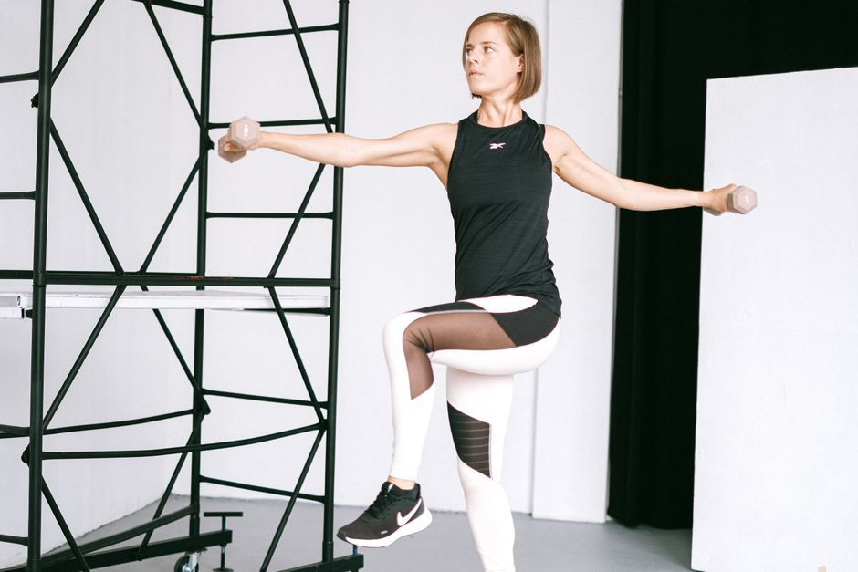

Metabolic Health
How to Boost Metabolism Naturally, Without Force
You can support your metabolism naturally by building muscle, eating enough protein, sleeping well, moving throughout the day, and not undereating for long stretches. No food or tea will transform it overnight. Your metabolism is the sum of how your whole body uses energy, so it responds best to steady care, not force.
What is metabolism, really?
Metabolism is every process your body uses to turn food into energy, and it never stops. According to Cleveland Clinic, it includes the energy you use for basic functions like breathing and keeping your heart beating, the energy it takes to digest food, and the energy you use to move.
That first part is larger than most people expect, and you cannot simply talk it into running faster. Your age, your genetics, your body size, and your hormones all play a part. It is a living system doing its best with what it has been given, and it is not a character reference.
What actually helps your metabolism?
A short list of unglamorous habits has the best support behind it.

Build and keep muscle. Muscle uses more energy than fat, even at rest. Gentle strength work with bands, light weights, or your own body weight is a fine place to begin, and it is worth keeping up as you get older. If you are new to this or managing a health condition, check with your physician first.
Eat enough protein. Your body spends more energy digesting protein than it does digesting fat, and protein helps you hold on to the muscle you have. Include some at each meal.
Protect your sleep. Cleveland Clinic notes that lack of sleep can disrupt your hormones and slow your body's ability to use energy well. For many tired people, this is the most overlooked item on the list.
Move all through the day. Formal exercise is only part of the picture. Walking after meals, taking the stairs, and standing up to stretch all add up, and they are kinder to a depleted body than one punishing workout.
Does eating too little slow your metabolism?
It can. When food is scarce for long enough, your body tends to conserve energy, because to your nervous system a crash diet looks a lot like a famine. It has no way of knowing you chose it. You may feel cold, tired, irritable, and preoccupied with food, and then you may blame yourself for all four.
Please do not. This is your body being faithful. Regular meals are a signal that provision is on the way, and a body that trusts the food supply has less reason to hoard its energy.
Do metabolism boosting foods and supplements work?
Mostly, the effect is small. Green tea, coffee, and spicy foods may nudge your energy use for a short time, but they will not change the shape of your health. Be wary of any pill or powder that promises to "melt" or "torch" fat. Many of these products are poorly regulated, and stimulant blends can be a real problem for an anxious body or a sensitive heart. Check with your physician before you start one, especially if you take medication.
How does stress affect your metabolism?
Stress affects how your body uses energy, how you sleep, and what you crave. A nervous system stuck on high alert is spending its resources on staying ready. If that sounds familiar, my guide to nervous system dysregulation may help you put words to it, and why your weight will not budge goes further into the stress side of the story.
I think of this often when I read what one client, Taylor W, shared: "I didn't lose weight because I forced my body into submission; I lost weight because my body finally felt safe enough to let it go." That is her experience and not a promise, since every body is different. But it reflects what I hold to in this work. The body heals under safety, not pressure.
When should you ask your doctor about a slow metabolism?
Ask your physician if you have unexplained weight gain, deep fatigue, trouble tolerating cold, joint and muscle pain, dry skin, or dry, thinning hair. The National Institute of Diabetes and Digestive and Kidney Diseases lists these among the possible symptoms of an underactive thyroid, and a simple blood test can check for it. You can also read how stress and your thyroid relate. Medication decisions stay with the doctor who prescribed them.
Once your physician has ruled out what needs ruling out, my weight and metabolic health support looks at the whole picture with you: digestion, hormones, sleep, and how safe your body feels.
Pause for Reflection
Rest a hand on your belly and take a slow breath in.
What has your body been asked to survive on? What would change if you treated it as a partner, not a problem?
"To every thing there is a season" (Ecclesiastes 3:1, KJV). Your body in this season is not behind. It has been keeping you alive, and it deserves to be fed, rested, and listened to.
FAQ
Does metabolism really slow down with age?
Many people notice changes over time, and loss of muscle and shifts in activity and hormones can all play a part. This does not mean nothing can be done. Strength work, protein, and sleep remain worthwhile at any age, with your physician's guidance.
Can you boost your metabolism in a week?
Not in any lasting way, and a plan that promises it deserves suspicion. Your energy may improve with better sleep and regular meals fairly soon, but your metabolism itself responds to months of steady habits. Slow is not failure here.
Does drinking water help metabolism?
Staying hydrated supports every process in your body, including digestion. Any direct effect on energy use appears to be modest. Think of water as part of the foundation, not as a shortcut.
How do I start working with you?
If you would like to talk through whether this is a fit, you can send me a message through my contact page, and we can look at gentle next steps together.
This article is for educational purposes and is not medical advice. It is not intended to diagnose, treat, cure, or prevent any disease. Please work with a qualified practitioner, and consult your physician before making changes to your health routine.
In Renewal,
Lynette Wing
Founder of Renewal Health
Clinical Homeopath, Naturopath, Mind-Body Practitioner
Dedicated to root-cause healing and whole-person alignment. Guiding clients to emerge, align, and live fully, restoring vitality, clarity, and sustainable wellness. About Lynette